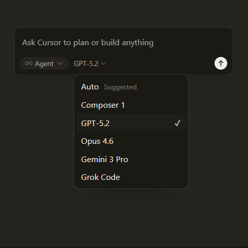
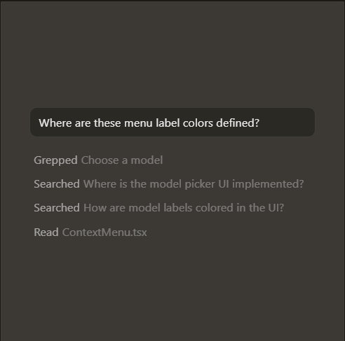

Accelerate development by handing
off tasks to Cursor, while you focus on
making decisions.
Learn about agentic development →
Our specialised Tab model predicts
your next action with striking speed
and precision.
Learn about Tab →
Cursor reviews your PRs in Github,
collaborates in Slack,and runs in your terminal.
Learn abou Cursor's surfaces →
“It was night and day from one batch to another, adoption went from single digits to over 80%. It just spread like wildfire, all the best builders were using Cursor.”

Diana Hu
General Partner, Y Combinator
“My favorite enterprise AI service is Cursor. Every one of our engineers, some 40,000, are now assisted by AI and our productivity has gone up incredibly.”

Jensen Huang
President & CEO, NVIDIA
“The best LLM applications have an autonomy slider: you control how much independence to give the AI. In Cursor, you can do Tab completion, Cmd+K for targeted edits, or you can let it rip with the full autonomy agentic version.”

Andrej Karpathy
CEO, Eureka Labs
“Cursor quickly grew from hundreds to thousands of extremely enthusiastic Stripe employees. We spend more on R&D and software creation than any other undertaking, and there's significant economic outcomes when making that process more efficient.”

Patrick Collison
Co‑Founder & CEO, Stripe
“The most useful AI tool that I currently pay for, hands down, is Cursor. It's fast, autocompletes when and where you need it to, handles brackets properly, sensible keyboard shortcuts, bring-your-own-model... everything is well put together.”

shadcn
Creator of shadcn/ui
“It's definitely becoming more fun to be a programmer. We are at the 1% of what's possible, and it's in interactive experiences like Cursor where models like GPT-5 shine brightest.”

Greg Brockman
President, OpenAI
Use the best model for every task
Choose between every cutting-edge model
from
OpenAI, Anthropic, Gemini, xAI, and Cursor.
Explore models ↗
Complete codebase understanding
Cursor learns how your codebase works, no matter
the scale or complexity.
Learn about codebase indexing ↗
Develop enduring software
Trusted by over half of the Fortune 500 to accelerate
development, securely and at scale.
Explore enterprise →
2.3
Jan 22,2026
Jan 16,2026
Jan 8,2026
2.3
Dec 22,2025
See what's new in Cursor →
Join us →

Recent highlights
Towards self-driving codebases
We're making a part of our multi-agent research
harness available to try today in preview.
Research . Feb 5, 2026
Salesforce ships higher-quality code across 20,000 developers
with Cursor
Over 90% of developers at Salesforce now use Cursor, driving double-digit
improvements in cycle time, PR velocity, and code quality.
Customers · Jan 21, 2026
Best practices for coding with agents
A comprehensive guide to working with coding agents, from starting with
plans to managing context, customizing workflows, and reviewing code.
Product · Jan 9,2026
View more posts →